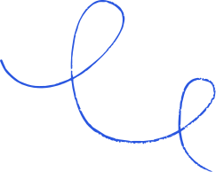
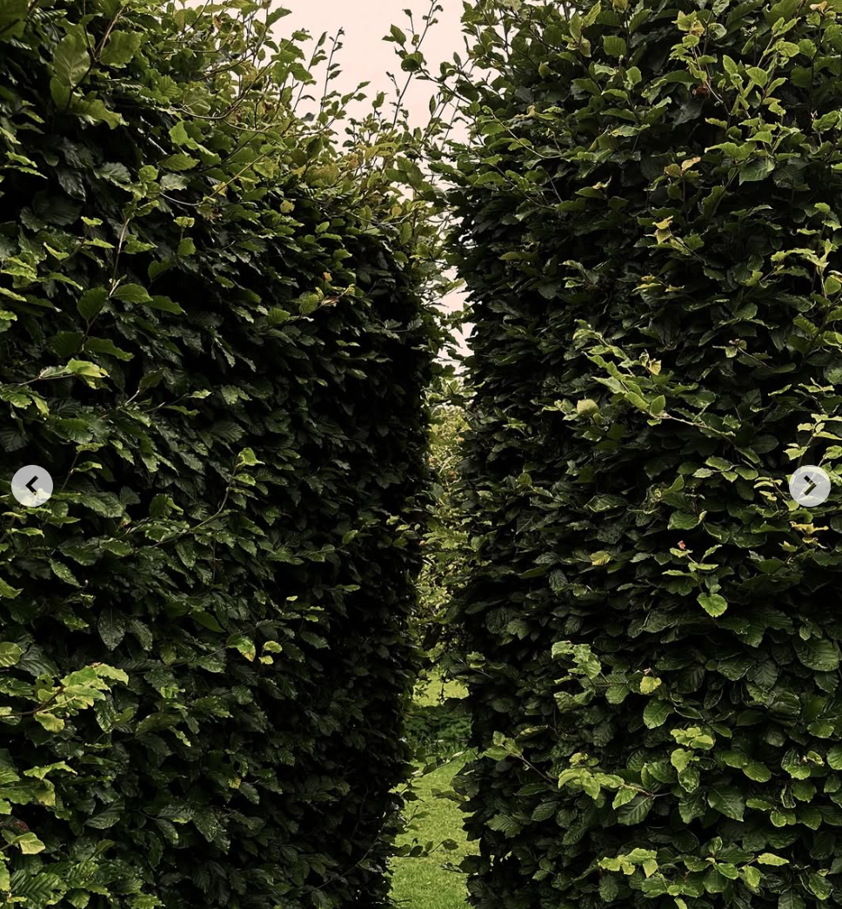

What I wanted started to show up way sooner than I thought was possible, so I went further

The right things just started to shift and there was a clear way forward.


I realized I wasn't stuck. I just hadn't chosen yet. Once I did, I felt so relieved and powerful.